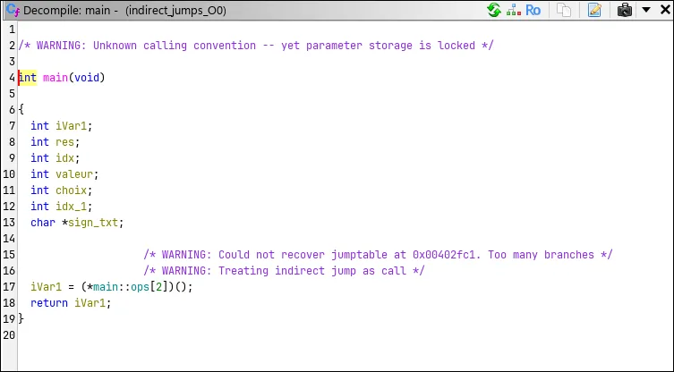
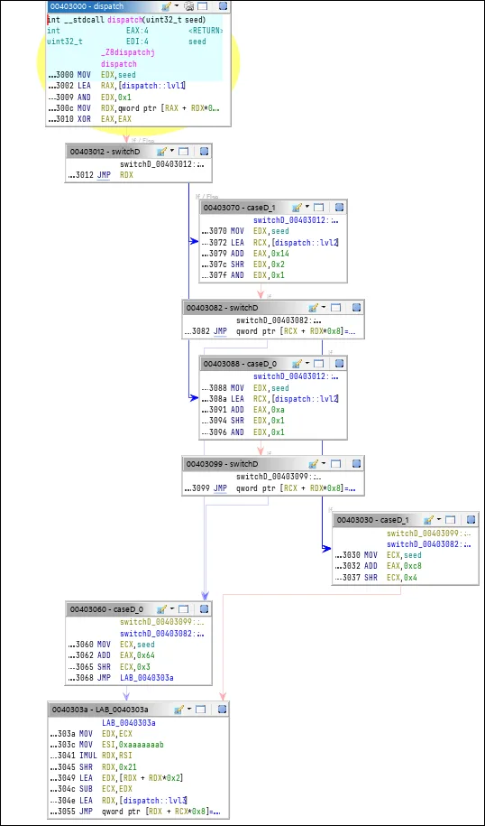

Binary analysisActive
Where Ghidra loses the thread
A disassembler rebuilds a program's control-flow graph by following jumps. When the target of a jump is a value in a register, it has to guess. We wrote code designed to make it guess wrong, three levels deep, and measured what it recovered.
On x86-64 at -O0, a single JMP RAX has 8 real targets and Ghidra recovers 1. Its decompiler gives up and rewrites the jump as a function call. Optimisation helps it: at -O2 it recovers 6 of the 9 edges of the nested version.
01The trick: computed goto
GCC lets C++ take the address of a label (&&label) and jump to it (goto *ptr). Put those addresses in a table, index the table at runtime, and the compiler emits jmp *reg: the target is no longer written in the instruction. Chain three of these, each landing on code that does the next indirect jump, and static analysis has to propagate every possible value through every stage to rebuild the graph.
static void* ops[] = { &&op_double, &&op_negate, &&op_square };
static void* signe[] = { &&positive, &&negative, &&zero };
static void* parite[] = { &&even, &&odd };
goto *ops[choix]; // level 1 → level 2 → level 3Two programs: indirect_jumps.cpp, readable and deterministic, to follow by hand; and nested_indirect.cpp, where all three table indices come from the bits of one seed, so a loop over seeds walks many distinct paths.
02My part
Cross-compiling both programs at -O0, -O1 and -O2 for the three architectures, extracting the assembly and objdump listings, then the Ghidra analysis: counting the real indirect jumps and their targets from the tables, and comparing with what Ghidra recovered.
03Results so far
| Binary | Indirect jumps | Real targets | Found by Ghidra | Graph |
|---|---|---|---|---|
indirect_jumps x86-64 -O0 | 1 | 8 | 1 | truncated, 2 blocks |
indirect_jumps x86-64 -O2 | 7 | 7 | 1 | 1 block, rest not disassembled |
nested_indirect x86-64 -O0 | 1 shared | 7 | 2 | level 1 only, seen as a switch |
nested_indirect x86-64 -O2 | 4 | 9 edges | 6 edges | reaches level 3, last targets missing |
indirect_jumps AArch64 -O0 | 1 (br x0) | 8 | 1 | truncated, 2 blocks |
The other AArch64 and RISC-V builds are compiled and counted, not analysed yet.
Why only 1 of 8 at -O0
At -O0, GCC merges the three goto * into one shared JMP RAX at 0x402fc1; each dispatch point loads RAX from its table and jumps there directly. Ghidra propagated the constant choix = 2, computed ops[2], and stopped. The signe and parite targets are ignored, and the function graph shows two blocks. The tables are typed correctly, but only thanks to the DWARF debug info, and their cross-references are data references with no link to the jump.

Why -O2 helps
At -O2 the compiler stops sharing the jump: each level gets its own JMP qword ptr [RCX + RDX*8] right after a masked index (AND EDX, 0x1). Ghidra recognises that shape as a bounded switch and follows it down to level 3.

lvl3.